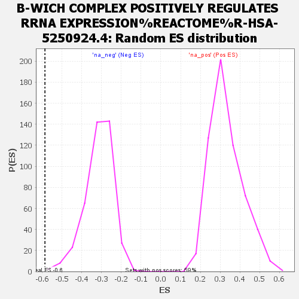

| | | Dataset | ranked |
| Phenotype | NoPhenotypeAvailable |
| Upregulated in class | na_neg |
| GeneSet | B-WICH COMPLEX POSITIVELY REGULATES RRNA EXPRESSION%REACTOME%R-HSA-5250924.4 |
| Enrichment Score (ES) | -0.58639246 |
| Normalized Enrichment Score (NES) | -1.8712286 |
| Nominal p-value | 0.00243309 |
| FDR q-value | 0.38080475 |
| FWER p-Value | 0.911 |
Table: GSEA Results Summary
 Fig 1: Enrichment plot: B-WICH COMPLEX POSITIVELY REGULATES RRNA EXPRESSION%REACTOME%R-HSA-5250924.4
Fig 1: Enrichment plot: B-WICH COMPLEX POSITIVELY REGULATES RRNA EXPRESSION%REACTOME%R-HSA-5250924.4
Profile of the Running ES Score & Positions of GeneSet Members on the Rank Ordered List
| SYMBOL | RANK IN GENE LIST | RANK METRIC SCORE | RUNNING ES | CORE ENRICHMENT | | 1 | DDX21 | 1132 | 0.612 | -0.0293 | No |
| 2 | POLR1A | 2087 | 0.392 | -0.0625 | No |
| 3 | POLR2H | 2410 | 0.350 | -0.0587 | No |
| 4 | DEK | 2722 | 0.313 | -0.0567 | No |
| 5 | SMARCA5 | 3122 | 0.271 | -0.0632 | No |
| 6 | ACTB | 4023 | 0.199 | -0.1063 | No |
| 7 | H2AX | 5140 | 0.128 | -0.1680 | No |
| 8 | POLR1D | 5722 | 0.097 | -0.1980 | No |
| 9 | H2AZ2 | 5962 | 0.087 | -0.2072 | No |
| 10 | TAF1A | 6209 | 0.075 | -0.2175 | No |
| 11 | POLR1C | 7078 | 0.037 | -0.2699 | No |
| 12 | H2BC15 | 7218 | 0.032 | -0.2765 | No |
| 13 | TBP | 7346 | 0.026 | -0.2827 | No |
| 14 | BAZ1B | 7595 | 0.017 | -0.2972 | No |
| 15 | TAF1D | 7614 | 0.016 | -0.2973 | No |
| 16 | GSK3B | 8741 | -0.025 | -0.3667 | No |
| 17 | POLR1E | 8924 | -0.034 | -0.3759 | No |
| 18 | H2BC9 | 9133 | -0.042 | -0.3861 | No |
| 19 | POLR2F | 9687 | -0.064 | -0.4167 | No |
| 20 | TAF1B | 9912 | -0.074 | -0.4257 | No |
| 21 | POLR2K | 10689 | -0.111 | -0.4671 | No |
| 22 | H2AC8 | 11000 | -0.128 | -0.4778 | No |
| 23 | H2BC11 | 12090 | -0.197 | -0.5331 | No |
| 24 | H4C9 | 12816 | -0.252 | -0.5615 | No |
| 25 | SF3B1 | 13157 | -0.283 | -0.5634 | Yes |
| 26 | ERCC6 | 13237 | -0.293 | -0.5482 | Yes |
| 27 | H2BC8 | 13828 | -0.374 | -0.5597 | Yes |
| 28 | MYBBP1A | 14252 | -0.458 | -0.5547 | Yes |
| 29 | KAT2A | 14508 | -0.509 | -0.5356 | Yes |
| 30 | POLR1B | 14541 | -0.518 | -0.5018 | Yes |
| 31 | EP300 | 14557 | -0.522 | -0.4667 | Yes |
| 32 | KAT2B | 14644 | -0.548 | -0.4343 | Yes |
| 33 | TAF1C | 14701 | -0.562 | -0.3990 | Yes |
| 34 | POLR2E | 14918 | -0.633 | -0.3689 | Yes |
| 35 | H2AJ | 15107 | -0.706 | -0.3320 | Yes |
| 36 | H2BC12 | 15192 | -0.745 | -0.2857 | Yes |
| 37 | H3-3B | 15193 | -0.745 | -0.2342 | Yes |
| 38 | POLR2L | 15222 | -0.758 | -0.1836 | Yes |
| 39 | H2BC5 | 15513 | -0.942 | -0.1368 | Yes |
| 40 | H2BC21 | 15648 | -1.092 | -0.0698 | Yes |
| 41 | H2AC6 | 15717 | -1.201 | 0.0089 | Yes |
Table: GSEA details [plain text format]

Fig 2: B-WICH COMPLEX POSITIVELY REGULATES RRNA EXPRESSION%REACTOME%R-HSA-5250924.4: Random ES distribution
Gene set null distribution of ES for B-WICH COMPLEX POSITIVELY REGULATES RRNA EXPRESSION%REACTOME%R-HSA-5250924.4